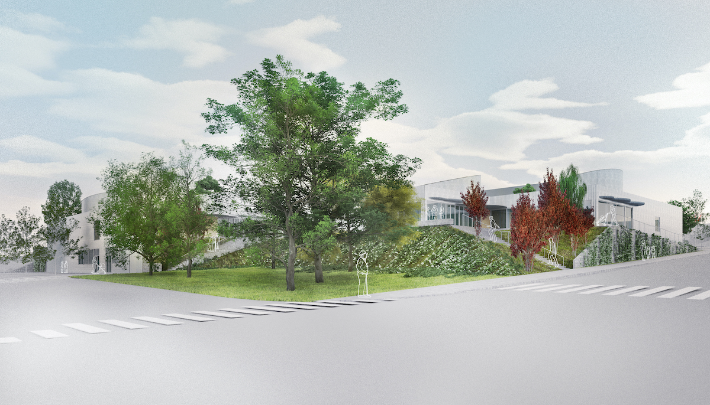
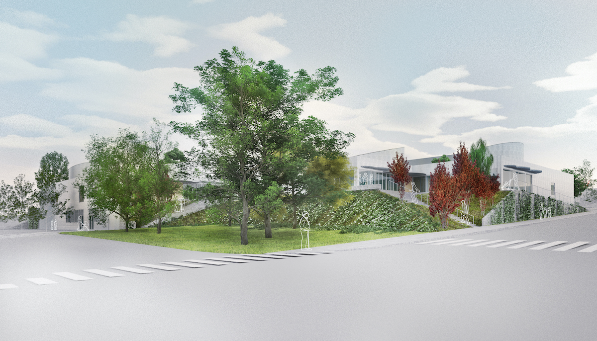
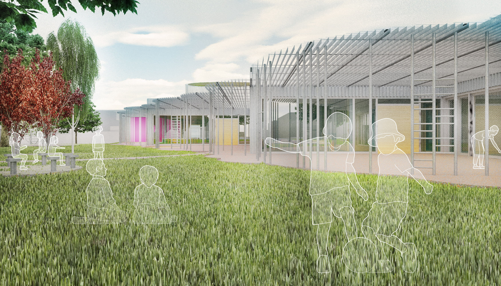
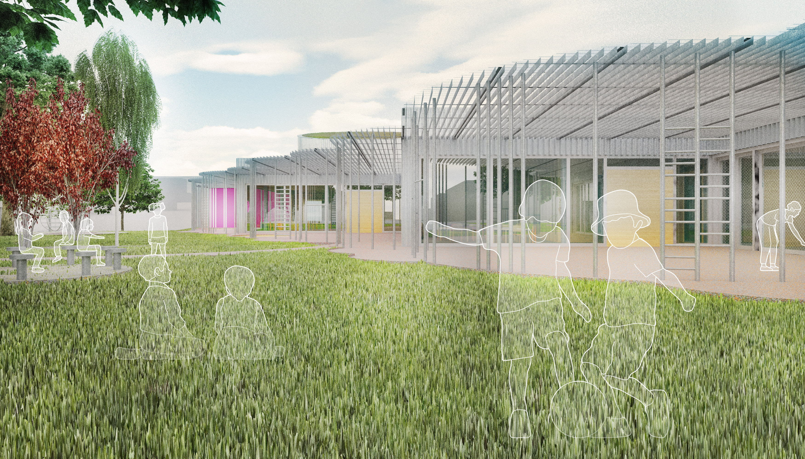
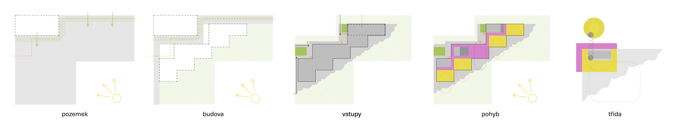
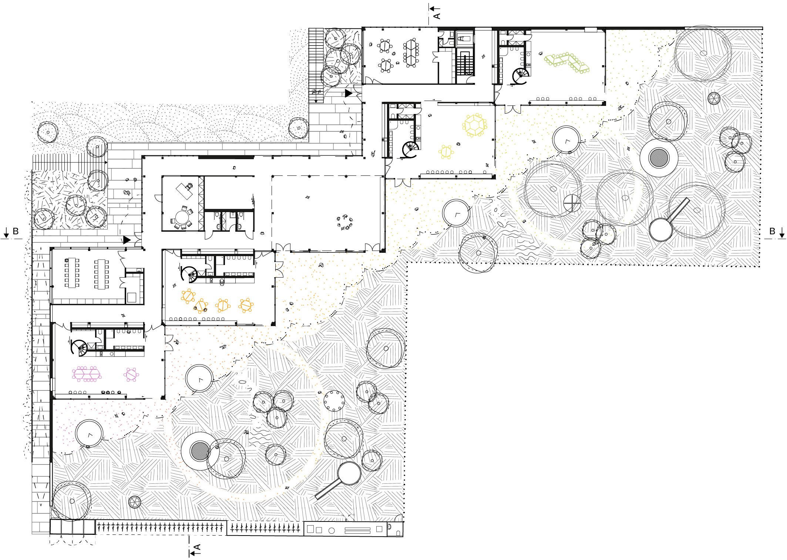
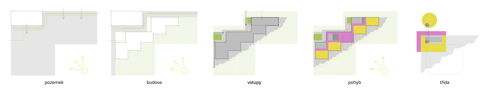
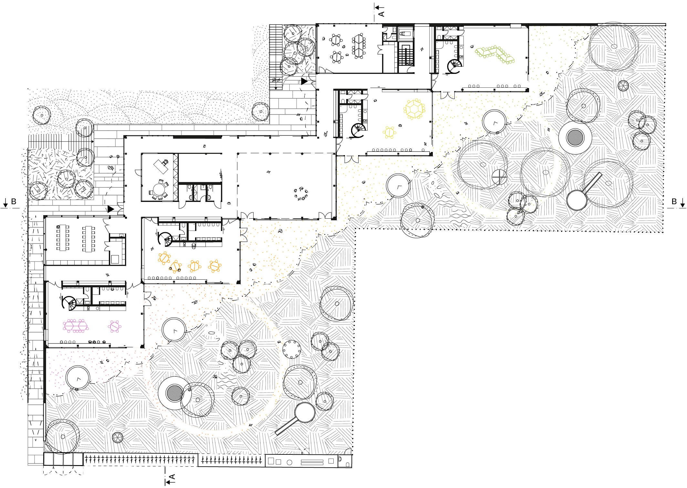

-


 

 
 -
 


MŠ Červený vrch
Architektonická soutěž na novou školku byla vypsána městskou částí Praha 6. Zvolená parcela se strategicky nachází na sídlišti. Ačkoliv severo-západní roh pozemku základní školy Červený Vrch vypadá jako ideální pro novou budovu, při bližším průzkumu narazíme na řadu protichůdných limitů – ulice ležící téměř o 4 metry níže, páteřní trasa teplovodu na hranici pozemku a zejména nároží v soukromém vlastnictví. Na první pohled nelogicky navrhujeme umístit budovu do její limitní polohy v rohu. Nezastavitelné plochy definujeme jako veřejnou zeleň a poloveřejnou cestu s dvěma předprostory, z kterých se vstupuje do budovy a neotáčíme se k okolí zády. Tím nám zůstává velká jihovýchodní zahrada, která využívá 100% z nepraktického tvaru pozemku. Budova je koncipována jako nehierarchická. U obou předprostorů se nachází vstup spolu s modelárnou a výukovou učebnou, které mohou sloužit také externím návštěvníkům. Čtyři třídy a multifunkční herna jsou na jedné straně propojeny proplétArchitektonická soutěž na novou školku byla vypsána městskou částí Praha 6. Zvolená parcela se strategicky nachází na sídlišti. Ačkoliv severo-západní roh pozemku základní školy Červený Vrch vypadá jako ideální pro novou budovu, při bližším průzkumu narazíme na řadu protichůdných limitů – ulice ležící téměř o 4 metry níže, páteřní trasa teplovodu na hranici pozemku a zejména nároží v soukromém vlastnictví. Na první pohled nelogicky navrhujeme umístit budovu do její limitní polohy v rohu. Nezastavitelné plochy definujeme jako veřejnou zeleň a poloveřejnou cestu s dvěma předprostory, z kterých se vstupuje do budovy a neotáčíme se k okolí zády. Tím nám zůstává velká jihovýchodní zahrada, která využívá 100% z nepraktického tvaru pozemku. Budova je koncipována jako nehierarchická. U obou předprostorů se nachází vstup spolu s modelárnou a výukovou učebnou, které mohou sloužit také externím návštěvníkům. Čtyři třídy a multifunkční herna jsou na jedné straně propojeny proplétajícím se hravým koridorem a na druhé se ocitají přímo v zahradě. Spirálové schodiště stoupá do meditativního kruhového spícího patérka. Použitím posuvných oken a dveří umožňuje otevřít školku do čtvrti při provozu veřejnějším nebo do zahrady při provozu soukromějším. Kuchyně je od školky oddělena, nachází se dole v úrovni ulice. Školka je první místo, kde děti čelí cizímu prostředí samy bez rodičů. Myslíme si, že je důležité aby jejich první vztahy a zkušenosti vznikali v přírodě. Zejména dnes se všudypřítomnou technikou by děti měly být schopni ocenit skutečný svět. Proto navrhujeme budovu jako dřevostavbu s pohledovou tesařskou trámovou konstrukcí doplněnou přírodním linoleem. Nicméně nosné sloupy jsou betonové, aby lépe přenesly boční zatížení a dali větší svobodu stěnám. Školka je zabalena vlnitým hliníkovým plechem a roštem ve tvaru mraků, čímž dostává téměř surrealní ráz aniž by přitahovala na sebe pozornost. Nejedná se však o samoúčelný design – provětrávaná vrstva a slunolamy udržují budovu chladnou v létě téměř bez údržby.
Lokace
Nesvačilky
Klient
Římskokatolická farnost
Náklady
1 500 000
Rok
2019
Status
Konstrukce
Veřejná
Dřevostavba
Veřejná
Dřevostavba